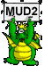

|  | Editorial
A message from the editor. |  | News & Gossip
Take a look here for the latest news and gossip in MUD2! |
| Articles
Read articles written about MUD2. | | Game Information
This section holds lots of goodies for the new and not so new MUD2 player. |
| Quizzes
You don't look where you're going, and you don't listen. Complete this quiz to prove that you do. | | Interviews
An interview with Nemesis (Player Of The Month). |
| Charts
Once more, we bring you the top 100 dead or alive. | | Agony
Hawumph dons his agony-aunt hat to help with a few problems he's been asked to solve. |
| Dragon Island Dates
Who would you like to be stuck on the Dragon Island with? | | Events
Sorcerer wars are fun! Darknight tells us his story about a particular good one. |
| Questionnaires
Who? What? Where? Why? When? | | Feedback Form
Send us feedback to let us know what you think about this
issue. |